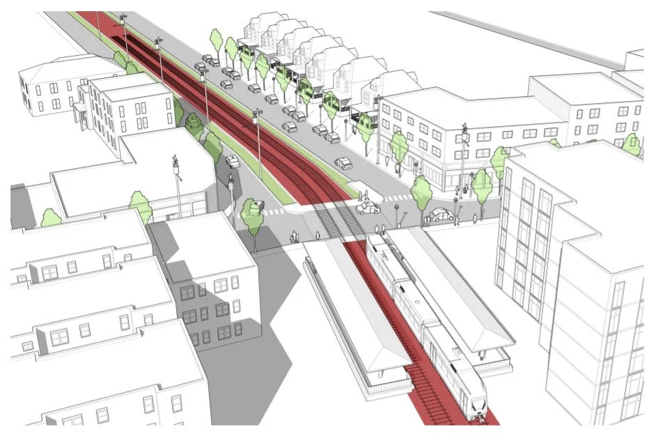
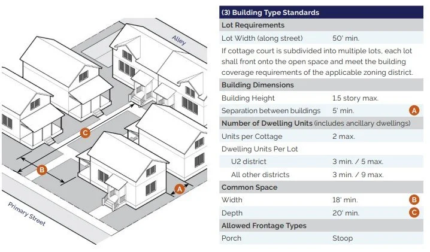

Services
The complete team for any zoning project.
From a full code rewrite to a single training session, ZoneCo brings lawyers, city planners, urban designers, and historic preservationists to the table. Every service below is delivered by people who have administered zoning inside local government.
Core services
Most engagements begin with a diagnostic and end with implementation support. The work in between is tailored to the community.
Diagnose
Find out what your code says, how it performs, and what to fix first.
Zoning diagnostics
A plain-language report on what your code says, how it performs, and what to fix first.
Recent work: Powell, Minnetonka, University City
Learn more →Land use and location analytics
Market, feasibility, and site analysis, delivered as maps and dashboards anyone can use.
Learn more →Write
Draft the regulations: a whole new code, or the parts that need it.
Zoning codes and subdivision ordinances
Full rewrites, targeted amendments, unified development codes, and subdivision regulations.
Recent work: Danville, Gaithersburg, Rockville
Learn more →Sign codes
Content-neutral, graphically rich sign regulations that meet current constitutional standards.
Recent work: Dunwoody, Marysville, Murfreesboro
Learn more →Historic preservation ordinances and guidelines
Preservation frameworks that protect character while remaining workable for owners.
Recent work: Cincinnati, Burlington, Centerville
Learn more →Impact mitigation and community benefits
Review frameworks for large projects, including data centers and energy facilities.
Recent work: Boston
Learn more →Engage
Bring residents, boards, and officials along at every step.
Engagement and education
Stakeholder committees, focus groups, open houses, and public hearings, planned for your community.
Recent work: Pike with a Purpose, Glen Ellyn
Learn more →Board and commission trainings
Two- to four-hour sessions for planning commissions, zoning boards, and elected officials.
Recent work: Fairborn
Learn more →Sustain
Keep the code working after adoption, with help when you need it.
Post-adoption services
Staff training, transition memos, digital code formats, and maintenance after adoption.
Learn more →On-call zoning services
As-needed zoning capacity for communities without it in-house.
Recent work: Onondaga County
Learn more →Specialties
Methods and offerings that set ZoneCo apart.
Method
Development Pattern Districting
Our intuitive approach to zoning: districts regulated for their unique form and function, not a patchwork of zones.
Studio
Regulatory Design Studio
Simple, effective, and beautiful regulatory illustrations that bring zoning to life.
Reform
Equitable zoning
Assessments and tools, including our Equitable Zoning Scorecard, for more equitable and just communities.
ZoneCoastal
Coastal zoning
Zoning for resiliency: sea-level rise, finished floor elevations, stormwater, and fill.
Private sector
Development consulting
Strategy for complex projects, from concept to build-out. More than $1 billion of projects assisted.
Due diligence
Zoning verification letters
Timely, accurate written verification of a property's zoning, in any jurisdiction nationwide.
Writing custom zoning codes. Beautifully.
We partner with top planning, urban design, landscape architecture, and engineering firms to create codes that are visually appealing and easy to use. Plain-language purpose statements, consolidated use tables, and graphics that explain height, frontage, and lot standards at a glance.
See example codes and diagnostic reports, or every community we've worked with.


Not sure where to start?
Tell us what's not working in your code. We'll tell you what it would take to fix it, and what it would cost.